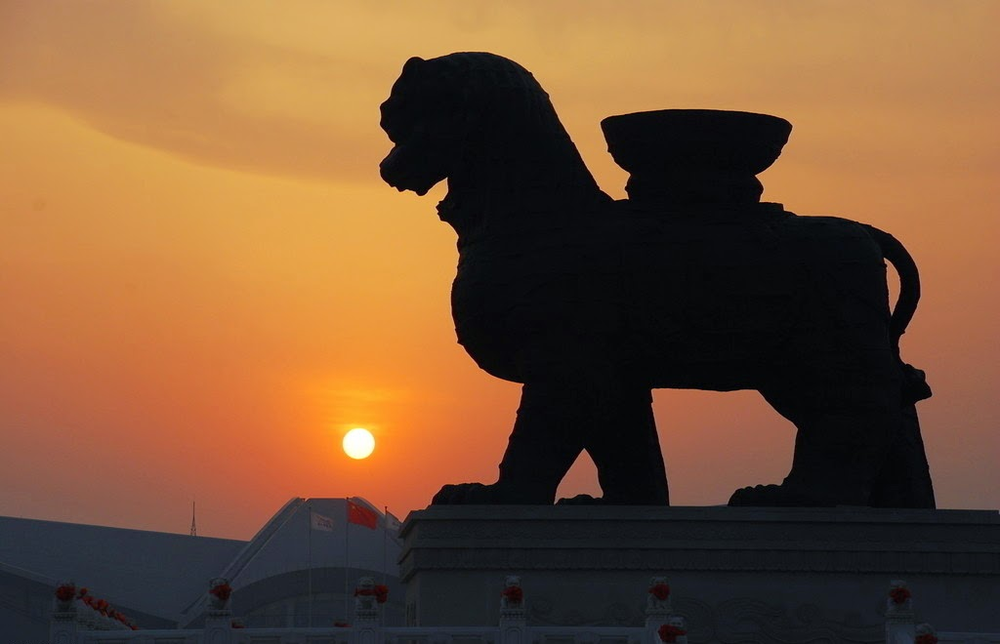
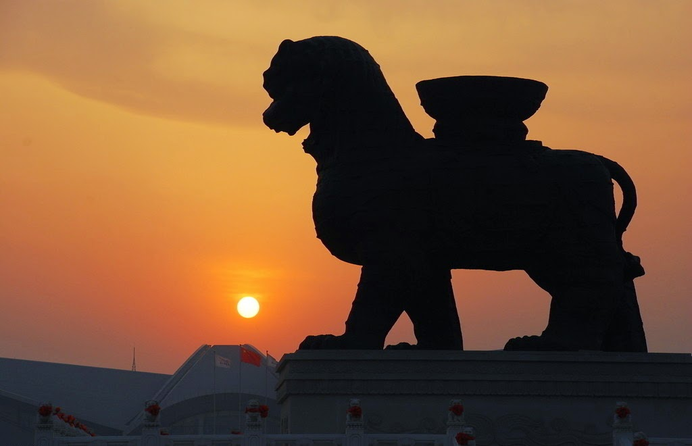

Three places I am going to introduce
Longxing Temple


Longxing Temple was originally located in the Long Tengyuan of Murong Xi, Emperor Zhaowen of the later Yan. In the sixth year of Emperor Kai of the Sui Emperor (586), it began to build a temple in the garden, the first name of Longzang Temple, and the Tang Dynasty changed Longxing Temple. In the fourth year of Kaibao in the Northern Song Dynasty (971), Zhao Kuangyin, Emperor Taizu of the Song Dynasty, extended the temple, built the Great Compassion Treasure Pavilion, and cast a bronze statue of Guanyin Bodhisattva with thousands of hands and eyes, seven zhangs high and three feet high (21.3 meters). Since then, the Jin, Yuan and Ming dynasties have repaired and added to the temple. During the years of Kangxi and Qianlong in Qing Dynasty, it was rebuilt twice by edict, and in the 49th year of Kangxi (1710) it was awarded "Longxing Temple".
At present, Longxing Temple covers an area of 82,500 square meters, the layout and architecture retain the Song Dynasty style.
Inside the gate is a rectangular courtyard, the bell tower and the drum tower are left and right, and the middle hall of six divisions of Great Jue has been destroyed, but still remains; To the north is the Hall of Mani, with two sides, forming a long courtyard; Then entering the second door to the north, is the main building of Great Mercy Pavilion and the two sides of the Cixi Pavilion and Zhulunzang Pavilion, and other secondary buildings, pavilions, halls, pavilions and other forms of magnificent spatial combination, is the climax of the whole building group; Finally, there is the temple of Meituo located behind the temple; Among them, the Buddha Pavilion and the Mituo Hall use three parallel halls.
The whole temple building is arranged in depth according to the north-south central axis, from outside to inside, the temples overlap, the courtyards change each other, the height is scattered, and the main and secondary are distinct; To the north, there are archway, altar, Kangxi Qianlong two imperial monument pavilion, imperial book tower, collection pavilion, etc. At the end, there is the Bilu Hall demolished from Chongyin Temple in Zhengding City in 1959, which was built by the Ming Emperor God for his birth mother, Empress Empress Cisheng.
Cangzhou Iron Lion
 

The iron lion of Cangzhou, the Pagoda of Jingzhou in Jingxian County, the Buddha statue of Longxing Temple in Zhengding County and the Zhaozhou Bridge in Zhaoxian County are called the four ancient treasures of Hebei. According to the original inscriptions on the right side of the neck and the edge of the teeth of the iron lion, the iron lion was cast in the third year of Guangshun in the later Zhou Dynasty (953) [a]. There are three different theories about the specific purpose of the Iron Lion. One holds that the iron lion was cast by convicts you during the Northern Expedition of Emperor Sezong in the later Zhou Dynasty and used for the towns and cities. Another saying is that the iron lion is used in Zhenhai, hence the nickname "Zhenhai Roar" [c]; There is also a belief that, based on the suspected Diamond Sutra in Iron Lion's abdomen and the lotus basin on its back, the Iron Lion should have been an annex of a temple, with an image of Manjusri on its back, and a white elephant and a statue of a Bodhisattva opposite it.
Iron Lion is located in the ancient city of Cangzhou, Cangxian County, Cangzhou City, on the north side of the road from the east gate to the west gate. The actual length of the Tishlion is 6.264 meters, the body is 2.981 meters wide, the full height is 5.47 meters, the belly is hollow, and the weight is 32 tons, which is estimated to have weighed more than 40 tons when it was built. According to the marks on the lion's body, each piece of clay was cast with a width of 35 to 45 centimeters and a height of 20 to 25 centimeters. A total of about 500 pieces of clay were used. The head faces south and rises, the mouth is wide open, the head has wavy hair, the limbs are splayed, the back is backed by a large iron basin, the front chest and the buttocks are banded, the two ends of the front chest band hang over the shoulders, the buttocks band hang over the crotch. The top of the head and the lower part of the neck have the inscription "Lion King", the right side of the neck and the edge of the teeth have the inscription "Dazhou Guangshun three years cast", the left rib has the inscription "Shandong Liyun made", the abdomen has the inscription of suspected diamond Sutra, the inside of the head has the inscription "Baotian, Guo Baoyu" [a], and the inscription "Bei Wang □□ used" was found in the lotus basin.
Foothills Unitd Church


Almost from the time of the first settlement in Bowness, the United Church has held services here.
The original church building (now known as Robinson Hall) was dedicated on November 3, 1946. As the Official Board and congregation reviewed the needs of the church in the waning months of 1955, they found the existing building bursting at the seams due to the tremendous growth of the community after World War II. A new addition, Lawrie Hall (named after Mr. & Mrs. Robert Lawrie who dedicated the land) was built and became our sanctuary. The original building continues
In April 1970 Bowness United and Montgomery United were amalgamated and brought together the rich traditions of their respective communities to form Foothills United Church.